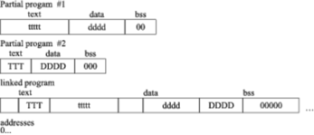

The tricore-ld is controlled by a scripting language. If you do not specify a script, the one that was compiled into the linker when it is installed is used by default.
Roughly, a section is a range of addresses, with no gaps; all data ”in” those addresses is treated the same for some particular purpose. For example there may be a ”read only” section.
The linker tricore-ld reads many object files (partial programs) and combines their contents to form a runable program. When tricore-as emits an object file, the partial program is assumed to start at address 0. tricore-ld assigns the final addresses for the partial program, so that different partial programs do not overlap. This is actually an oversimplification, but it suffices to explain how tricore-as uses sections.
tricore-ld moves blocks of bytes of your program to their run-time addresses. These blocks slide to their run-time addresses as rigid units; their length does not change and neither does the order of bytes within them. Such a rigid unit is called a section. Assigning run-time addresses to sections is called relocation. It includes the task of adjusting mentions of object-file addresses so they refer to the proper run-time addresses.
An object file written by tricore-as has at least three sections, any of which may be empty. These are named .text, .data and .bss sections. The .bss section is used for local common variable storage. You may allocate address space in the .bss section, but you may not dictate data to load into it before your program executes. When your program starts running, all the contents of the .bss section are zeroed bytes.
To let tricore-ld know which data changes when the sections are relocated, and how to change that data, tricore-as also writes to the object file details of the relocation needed. To perform relocation tricore-ld must know, each time an address in the object file is mentioned:
In this manual we use the notation <secname> <N> to mean ”offset <N> into section <secname>.
Apart from text, data and bss sections you need to know about the absolute section. When tricore-ld mixes partial programs, addresses in the absolute section remain unchanged. For example, address 0 is ”relocated” to run-time address 0 by tricore-ld. Although the linker never arranges two partial programs’ data sections with overlapping addresses after linking, by definition their absolute sections must overlap. Address absolute 239 in one art of a program is always the same address when the program is running as address absolute 239 in any other part of the program.
The idea of sections is extended to the undefined section. Any address whose section is unknown at assembly time is by definition rendered undefined <U>˜where <U> is filled in later. Since numbers are always defined, the only way to generate an undefined address is to mention an undefined symbol. A reference to a named common block would be such a symbol: its value is unknown at assembly time so it has section undefined.
By analogy the word section is used to describe groups of sections in the linked program. tricore-ld puts all partial programs’ text sections in contiguous addresses in the linked program. It is customary to refer to the text section of a program, meaning all the addresses of all partial programs’ text sections. Likewise for data and .bss sections.
Some sections are manipulated by tricore-ld; others are invented for use of tricore-as and have no meaning except during assembly.

| Figure 20.1: Sections |
These sections hold your program. tricore-as and tricore-ld treat them as separate but equal sections. Anything you can say of one section is true for another.
This section contains zeroed bytes when your program begins running. It is used to hold uninitialized variables or common storage. The length of each partial program’s .bss section is important, but because it starts out containing zeroed bytes there is no need to store explicit zero bytes in the object file. The .bss section was invented to eliminate those explicit zeros from object files.
Address 0 of this section is always “relocated” to runtime address 0. This is useful if you want to refer to an address that tricore-ld must not change when relocating. In this sense we speak of absolute addresses being “unrelocatable”: they do not change during relocation.
This “section” is a catch-all for address references to objects not in the preceding sections.